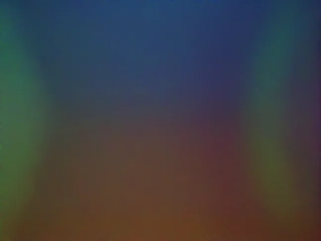
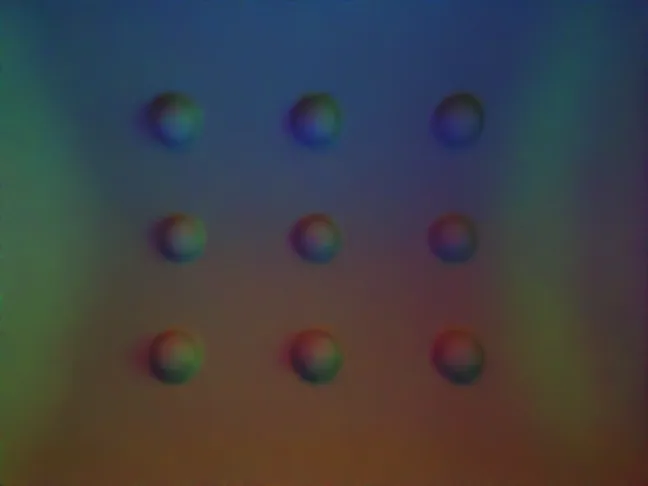

RGB2Normal i
Press spheres, take lines through each contact, and fit the dominant colour (PCA) against the surface-normal angle. A higher R² means colour maps to shape more linearly.
IJRR · arXiv 2504.14739
Design a tactile sensor in simulation, then build it.
GelSight sensors see touch through an optical system: a coated elastomer, coloured lights and a camera. OptiSense Studio breaks that optical system into modules, gives them parameters, and scores each design with physically based rendering. This page lets you change the geometry, the coating and the lights yourself and see the rendered tactile image.


SIM · GelSight Mini · 648×486The framework
Every GelSight-like sensor is decomposed into the same optical modules. Each module has a few parameters: a 27-point cage for shape, a BSDF for material, and position and type for lights and camera. A design is rendered with indenters pressed into it, then scored. You can tune it by hand (forward design) or let a search choose (inverse design: grid search or CMA-ES).
Press spheres, take lines through each contact, and fit the dominant colour (PCA) against the surface-normal angle. A higher R² means colour maps to shape more linearly.
Add camera noise of 30 % of the RGB value and measure how much the normal estimate gets confused. Closer to 0 means more robust.
As-orthographic-as-possible. Trace camera rays through mirrors and refractions. They should hit the gel head-on, which means low distortion.
Each pixel's footprint on the sensing surface should stay square and of equal size. The score is the mean area over its standard deviation.
Design Lab
Each case study changes one part of the optical design (shape, coating or lights) and scores the result with the objectives the paper uses for that sensor. Hover a metric name for its definition.
Bend the flat GelSight Mini gel into a cylinder or a dome by moving cage points, then find the coating that still reads shape well.
A new sensor: a flat sensing window between two rollers. The belt traps a thin layer of air over the acrylic, so light sent into the acrylic is lost to total internal reflection. Move the lights until the gel is evenly lit, then pick the coating.
An omnidirectional fingertip. LEDs embedded in a resin shell light the gel from inside. Choose the colours of the four LED arms, then reshape the whole tip and the inner resin with cages.
A human-finger-shaped sensor. One camera sees the whole finger through two mirrors. The large back mirror (M1) smears objects that touch near the base. CMA-ES reshapes M1's 81 cage parameters to maximize AOAP. The left side of the image always shows the original mirror; drag the divider to compare.
A GelSight-style stack built from OptiSense modules: camera, acrylic support, silicone elastomer and a coated sensing surface, lit by three LED bars. Pick a stop for every parameter to see the tactile image of that design.
Why these objectives?
The paper trains small random-forest models directly on simulated images: one estimates how far a plane is tilted against the gel, the other estimates a cylinder's radius. Both get worse as the coating gets more specular, the same trend RGB2Norm and NormDiff predict. The images below are part of the datasets those models were trained on. Fig. 15–16
θx 0°
θy 0°
Cylindrical GelSight Mini pressed against a plane tilted up to ±10° about both axes. With low-specularity coatings the estimated angle reaches 0.5° mean absolute error.
The cylinder's x/y scale goes from 2 to 50. The model regresses the radius from the per-channel standard deviation inside the contact.
@article{agarwal2025modularized,
title={A modularized design approach for GelSight family of vision-based tactile sensors},
author={Agarwal, Arpit and Mirzaee, Mohammad Amin and Sun, Xiping and Yuan, Wenzhen},
journal={The International Journal of Robotics Research},
volume={44},
number={13},
pages={2195--2214},
year={2025},
publisher={SAGE Publications, Sage UK: London, England}
}